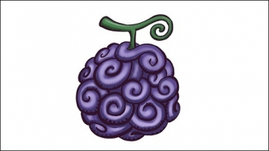
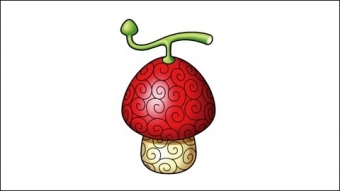
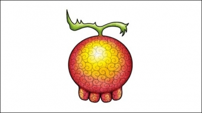
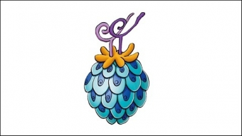
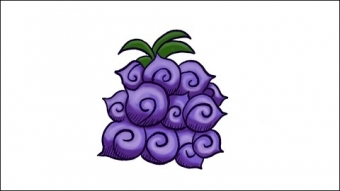
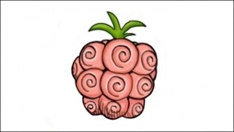
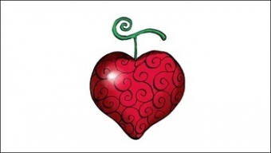
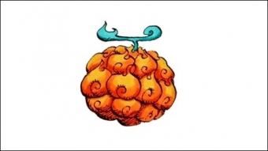
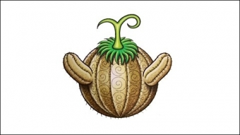

悪魔の実
ゴムゴムの実
体中がゴムのように伸び縮みする体質になり、打撃や圧迫、関節技、通常の銃弾や砲弾が通用しなくなる。 そして全身が絶縁体となり、電撃によるダメージを一切受けない。
ヒトヒトの実
人間と同等の知能を得ることができる。
動物が能力者でも、形態問わず人間と会話することができる。
応用すれば、能力者独自の形態に変身することもできる。
ハナハナの実
花のような形をしている。能力は体の組織のコピーを瞬時に作成し、遠方から花のように生やすというものであり、手足や感覚器などを瞬時に離れた場所から出現させられる。「ハナ」だからか、これらを生成する際には花びらが舞うのも特徴の一つ。
ヨミヨミの実
死後に一度だけ蘇生する能力で、二度の人生を約束される「復活人間」になる。その為生きている間はカナヅチになるだけで何の効果もない。
ウオウオの実
「焔雲を作り出して空を飛ぶ」、「島を焔雲に載せて運搬」、「口から高熱の息（または火炎）や真空波、雷撃を伴う咆哮などを発する」など、数ある悪魔の実の中でも破格の能力。
ヤミヤミの実
最も凶悪な力を秘めているとされ、食べると闇を操ることができる「闇人間」となる。自身の体から闇を展開することができ、その闇にふれたあらゆるものを、光をも逃さない強力な引力で引き込み、放出する事も出来る。最大の特徴は悪魔の実の能力者の実体を正確に引き寄せ、触れている相手の能力を無力化するというもの。
バラバラの実
肉体（着用している衣服も含む）を複数のパーツへバラバラにすることが可能になる。分離したパーツは空中に浮遊し、能力者の思うがままに動かせるため、人体構造の限界を超えた間合いからの遠隔攻撃も出来る。
オペオペの実
食べると「改造自在人間」となり、放出するドーム状のエリア内で移動、切断、接合、電撃などあらゆる行為を自在にできるようになる。瞬間的に入れ替えたり、違う生物同士で身体をくっつけたり、逆にバラバラにした状態でも生かしたりも出来る超常的な改造能力である。これにより人間の人格を入れ替えることすら可能。
メラメラの実
食べると全身が炎になり、火炎を操る事が出来る。自然系(ロギア)であるため覇気を纏った攻撃以外の物理攻撃を無効化する。にわか仕込みでも軽々と建物を焼き崩すほどの火力を有し、さらに訓練すれば太陽のような巨大な火の玉を作れるなど強力無比な能力である。
スナスナの実
体全体を砂に変える能力。全身を砂に変えることで、砂や礫の中を移動できるほか、下半身を砂嵐に変えて疑似的に飛行することもできる。砂嵐や流砂を起こすことも可能なほか、砂の性質を利用して触れた物の水分を吸収することもできる。しかし吸い続けると固まるため雨は天敵。